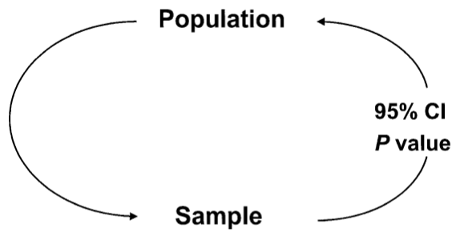
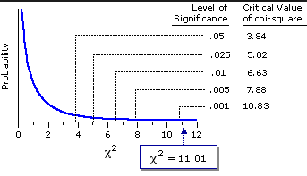

Section 4 — Introduction to Biostatistics
Department of Anesthesiology, Universidad del Cauca, Colombia
Department of Anesthesiology, Erasmus University Medical Centre, Rotterdam, The Netherlands
2026-10-04

Parameter
Estimand/te
95% CI
P value
Parameter · Estimand/te · 95% CI · P value
\[\sigma_{(p)} = \sqrt{\pi(1-\pi)}\]
\[SD_{(p)} = \sqrt{p(1-p)}\]
\[se_{(p)} = \sqrt{\frac{p(1-p)}{n}}\]
\[CI95\% = p \pm 1.96\sqrt{\frac{p(1-p)}{n}}\]
To estimate the prevalence of obesity in faculty students
\[SD_{(p)} = \sqrt{p(1-p)} = \sqrt{0.3(1-0.3)} = 0.458\]
\[SE_{(p)} = \sqrt{\frac{p(1-p)}{n}} = \sqrt{\frac{0.3(0.7)}{200}} = 0.032\]
\[CI95\% = p \pm 1.96\,(SE_{(p)}) = 0.3 \pm 1.96(0.032)\]
\[CI95\% = 0.3\ [0.237 - 0.362] = [23.7\% - 36.2\%]\]
Pediatric AIDS Clinical Trial Group (ACTG)
“We conducted a randomized, double-blinded, placebo-controlled trial of the efficacy and safety of zidovudine (AZT) in reducing the risk of maternal-infant HIV transmission”
363 pregnant women with HIV were randomized to AZT or placebo (18 postnatal months)
Conner, E., et al. (1994). Reduction of maternal-infant transmission of human immunodeficiency virus type 1 with zidovudine treatment, New England Journal of Medicine 331: 18.
| HIV + | HIV - | Total | |
|---|---|---|---|
| AZT | 13 | 167 | 180 |
| Placebo | 40 | 143 | 183 |
| Total | 53 | 310 | 363 |
CIAZT = 13/180 = 7%
CIPLAC = 40/183 = 22%
95% confidence intervals are calculated following the binomial distribution (if n is large it approaches normal)
The question is: Is this difference significant or can it be explained by chance (random error)?
What would they be then? the “expected” values if the H0 were true?
| HIV + | HIV - | Total | |
|---|---|---|---|
| AZT | 13 | 167 | 180 |
| Placebo | 40 | 143 | 183 |
| Total | 53 | 310 | 363 |
\[\chi^2 = \sum_{4\ cells}\frac{(O-E)^2}{E}\]
Observed
| HIV + | HIV - | Total | |
|---|---|---|---|
| AZT | 13 | 167 | 180 |
| Placebo | 40 | 143 | 183 |
| Total | 53 | 310 | 363 |
“Expected” if the H0 were true
| HIV + | HIV - | Total | |
|---|---|---|---|
| AZT | 26 | 154 | 180 |
| Placebo | 27 | 156 | 183 |
| Total | 53 | 310 | 363 |
| HIV + | HIV - | Total | |
|---|---|---|---|
| AZT | 26 | 154 | 180 |
| Placebo | 27 | 156 | 183 |
| Total | 53 | 310 | 363 |
\[\chi^2 = \sum_{4\ cells}\frac{(O-E)^2}{E}\]

P value for Chi2 test = 0.0001
There is sufficient evidence to reject H0 (equality). I accept H1: There are “statistically significant” differences between AZT and Placebo
Food poisoning occurred at a certain site. Some believe that the origin was chicken sandwiches
| Yes (Food poisoning) | No (Food poisoning) | Total | |
|---|---|---|---|
| Sandwich (Exposure) | a | b | a+b |
| Other food | c | d | c+d |
| Total | a+c | b+d | a+b+c+d |
| Yes | No | Total | |
|---|---|---|---|
| Sandwich | 109 | 116 | 225 |
| Other food | 4 | 34 | 38 |
| Total | 113 | 150 | 263 |
P value for Chi2 test = 0.001
Solution,
65 pregnant patients — classified as high risk for hypertension in pregnancy — are randomized in the third trimester to Aspirin 100 mg/day versus placebo to assess the effect on the occurrence of hypertension
| HT + | Non HT | Total | |
|---|---|---|---|
| ASA 100 | 4 | 30 | 34 |
| Placebo | 11 | 20 | 31 |
| Total | 15 | 50 | 65 |
Schiff, E. et al. The use of aspirin to prevent pregnancy-induced hypertension and lower the ratio of thromboxane A2 to prostacyclin in relatively high risk pregnancies. New England Journal of Medicine, 321, 6.
CIASA = 4/34 = 12%
CIPLAC = 11/31 = 35%
Fisher p value = 0.0378
Chi2 p value = 0.0234
Both tests reject H0
The Chi2 test can be extended to variables with more than two categories
| Stratum 1 | Stratum 2 | Stratum 3 | Total | |
|---|---|---|---|---|
| Male | 51 | 95 | 38 | 184 |
| Female | 17 | 101 | 75 | 193 |
| Total | 68 | 196 | 113 | 377 |
| Stratum 1 | Stratum 2 | Stratum 3 | Total | |
|---|---|---|---|---|
| Male | 51 | 95 | 38 | 184 |
| Female | 17 | 101 | 75 | 193 |
| Total | 68 | 196 | 113 | 377 |
Chi2 p value = 0.000
I have enough evidence to reject the H0 of independence. They are significantly related